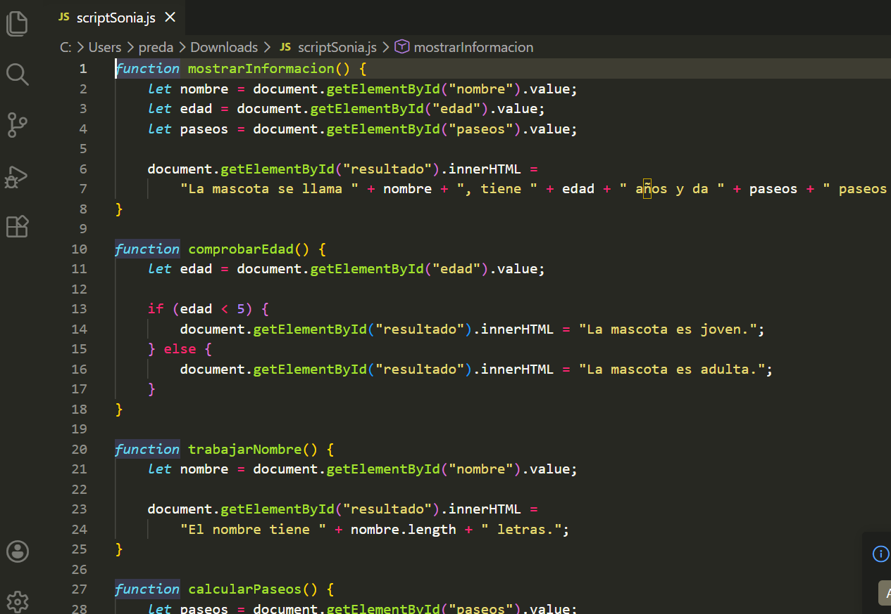
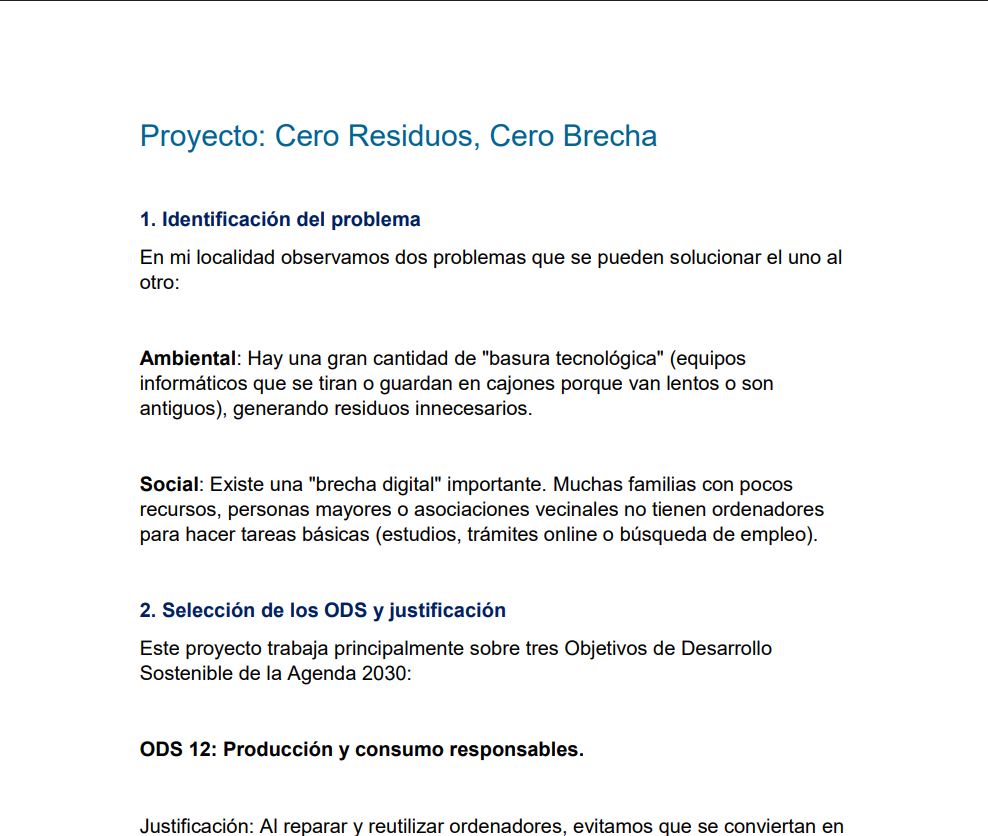
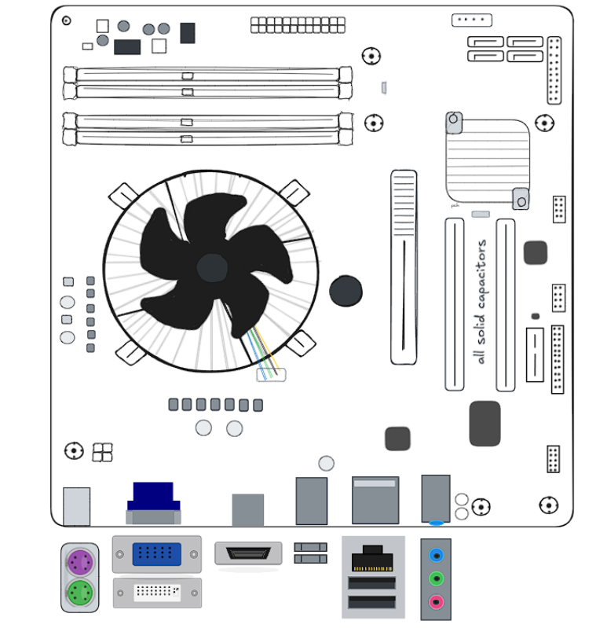
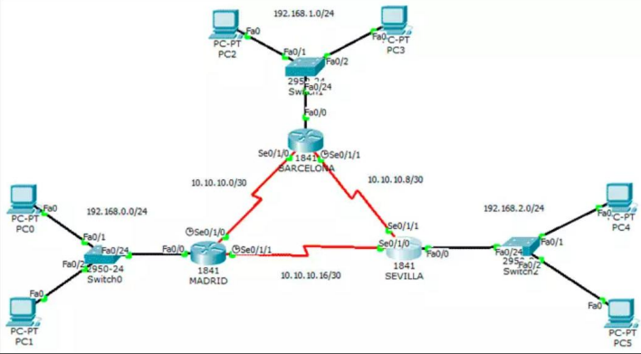
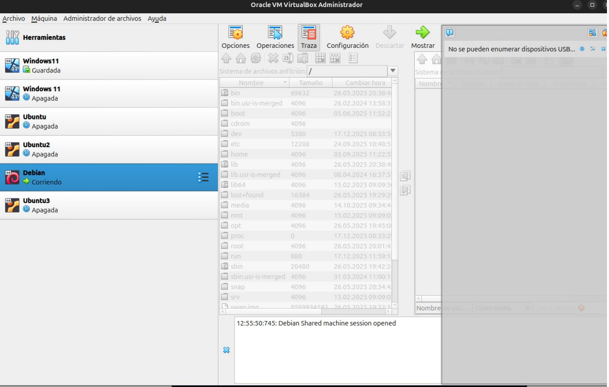
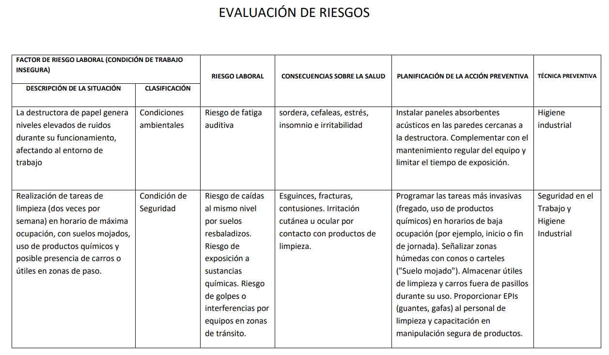

El núcleo de este proyecto es la propia página web. Para crearla, he aplicado lo visto en la UT2 sobre HTML y CSS, estructurando el contenido y dándole diseño. Además, en la UT2b dimos JavaScript, por lo que he programado un pequeño script interactivo para demostrar su uso en la web.

Resultado JS: ...
Durante el módulo de SASP hemos estudiado la acción humana sobre el entorno (Tema 1) y la sostenibilidad de los productos (Tema 3). Al desarrollar plataformas web digitales (Digitalización), favorecemos los planes de sostenibilidad en las empresas (Tema 5), reduciendo el uso de papel y centralizando la información en entornos virtuales como Microsoft 365 o aulas Moodle.

Para poder desarrollar páginas web y trabajar en informática, es fundamental conocer la arquitectura del ordenador (UT2). En este módulo hemos visto desde el ensamblaje paso a paso de un PC (UT4) hasta el mantenimiento preventivo y correctivo (UT5), comprobando voltajes de fuentes de alimentación, pitidos de la BIOS y el uso de herramientas de diagnóstico de hardware y software (UT6).

Para que esta página web pueda ser accesible, depende de una infraestructura de red. En el módulo de Redes hemos estudiado la instalación y configuración de equipos, así como la resolución de incidencias. Herramientas de diagnóstico de red, como el uso de comandos (test Traceroute), son esenciales para comprobar la conectividad.

El desarrollo de este trabajo se ha apoyado en los conocimientos de SOM. Hemos trabajado gestionando particiones y el arranque del sistema, usando comandos tanto en entornos Linux como Windows. Además, hemos visto la importancia de las utilidades de mantenimiento y el software para la creación de copias de seguridad e imágenes del sistema.

Todo el trabajo informático, ya sea de montaje o de desarrollo frente a una pantalla, debe cumplir con la normativa de seguridad. En la UT8 de prevención de riesgos laborales hemos aprendido los procedimientos de seguridad para evitar daños, así como la correcta postura en el puesto de trabajo y la protección medioambiental.

El proyecto lo he desarrollado desde el 10 de abril hasta el 22 de mayo. A continuación explico qué tareas he realizado cada semana:
Semana 1 (10 - 16 abril): Recopilación de información. Estuve revisando los apuntes de las aulas virtuales de Moodle de todas las asignaturas para ver qué temas habíamos dado y cómo integrarlos en el texto de la web.
Semana 2 (17 - 23 abril): Maquetación inicial. Creé el archivo HTML con la estructura base y empecé a aplicar las hojas de estilo (CSS) basándome en las prácticas que hicimos en la UT2 de Aplicaciones Web.
Semana 3 (24 - 30 abril): Programación. Escribí el código en JavaScript para el formulario de la web. Me aseguré de que el botón respondiera bien y mostrara los mensajes correctos según los datos introducidos.
Semana 4 (1 - 7 mayo): Revisión y corrección de errores. Estuve comprobando que la página no tuviera fallos, que el diseño no se rompiera y ajustando márgenes y colores en el CSS.
Semana 5 (8 - 14 mayo): Redacción de contenidos. Me dediqué a escribir los textos de cada sección (SOM, Redes, MMEQ, SASP, IPE), explicando qué habíamos dado en cada unidad de trabajo a lo largo del curso.
Semana 6 (15 - 22 mayo): Remates finales. Terminé de montar la tabla de temporalización y dejé el proyecto listo y empaquetado para su entrega final.
| Fase del Proyecto | Sem 1 (10-16 Abr) |
Sem 2 (17-23 Abr) |
Sem 3 (24-30 Abr) |
Sem 4 (1-7 May) |
Sem 5 (8-14 May) |
Sem 6 (15-22 May) |
|---|---|---|---|---|---|---|
| Recopilar información de Moodle | X | |||||
| Crear HTML y estilos CSS | X | |||||
| Programar script JS | X | |||||
| Revisión de errores de código | X | |||||
| Redactar textos de las asignaturas | X | |||||
| Tabla temporal y entrega | X |